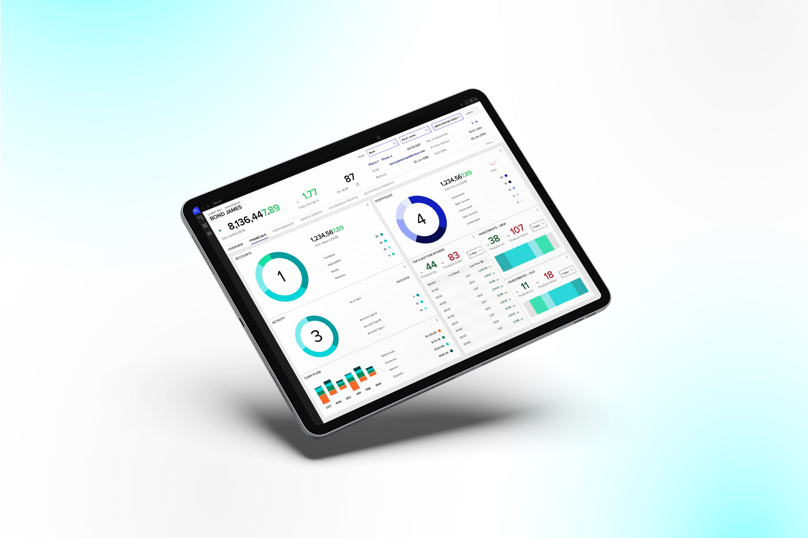

Refinitiv – Wealth
- UI Design
- Dashboards
- Prototyping
- Responsive

My Contribution
Owned
- UI design, wireframes to hand-off
- New expanded view and patterns
- Prototypes for stakeholder review
Led
- UI for moving TR1 into Workspace
- Reviews with offshore developers
- Feedback rounds with PMs and POs
Impact
- First Halo Light UI implementation
- TR1 integrated with Workspace
- Responsive across touchpoints